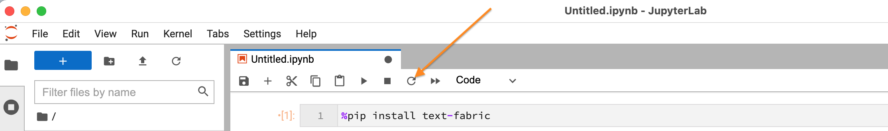

Module tf.about.install
Install
If you have already Python on your machine
Make sure you have at least Python 3.7.0
Recommended: install JupyterLab: fire up a terminal (= command prompt) and say
pip install jupyterlab
To get text-fabric, you can either fire up a terminal and say:
pip install text-fabric
or fire up a Jupyter Notebook (jupyter lab)
and in a cell say
!pip install text-fabric
Now restart this notebook by clicking the circular arrow in the toolbar:
.
If you do not have Python
The fastest way to set up everything you need to use TF is by installing the JupyterLab Desktop application.
This installs both JupyterLab and Python in one go, as a desktop application running under MacOS, Linux or Windows.
The Jupyter Desktop App can be downloaded from JupyterLab-desktop, choose the one that fits your system.
After downloading, go to your downloads folder and install the application in the way you are used to, but notice the following:
on macos: right-click the .pkg file, answer the dialog box with OK.
on all platforms: install for the current user, not for all users, otherwise you run into problems later on.
macos: click "Change install location" and set it to "Install for me only"
linux: after installation, run the following command from a terminal
where username should be changed
to your username on the system:
sudo chown -R username:username /opt/JupyterLab
windows: no extra instructions. Two installers will be launched, let them work with the same default location for installation.
Work with TF
In a notebook, put this incantation in a cell and run it:
from tf.app import use
And in a next cell, load the data of some corpus, e.g. annotation/banks.
A = use("annotation/banks")
The first time you do this you will see that the data is being downloaded and prepared for its first use. If you do this a second time, the data is already on your computer in pre-processed form, and TF will see that data and load it quickly.
From here you can use a tutorial.
More extensive tutorials are available for other corpora, see tf.about.corpora.
TF browser
You can also work with TF outside any programming context, just in the browser.
In a terminal, say
tf annotation/banks
Or, in a notebook cell, say
!tf annotation/banks
Wait a few seconds and you see a new window in your browser with an interface to submit queries to the corpus.
Note for Linux users
- On Ubuntu the
tfscript ends up in your~/.local/bindirectory, but this is not on your PATH. - You need to execute your
.profilefile first by:
source ~/.profile
You need to do this every time when you open a new terminal and
want to run TF.
If you get tired of this, you can add this to your .bashrc file:
PATH="~/.local/bin:${PATH}"
export PATH
Expand source code Browse git
"""
.. include:: ../docs/about/install.md
"""